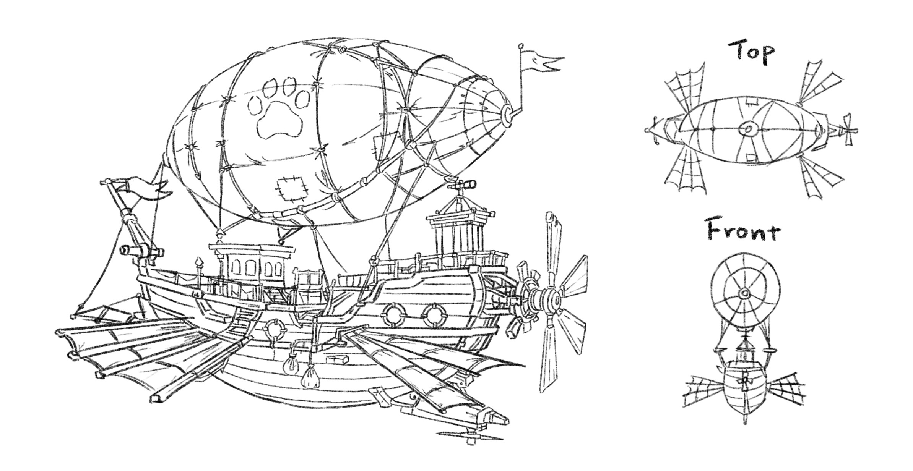
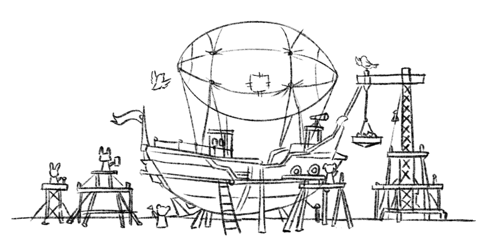
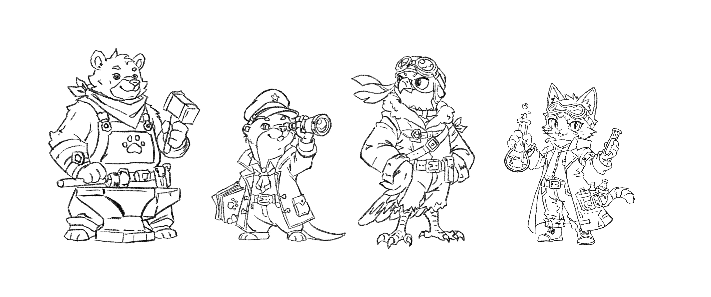
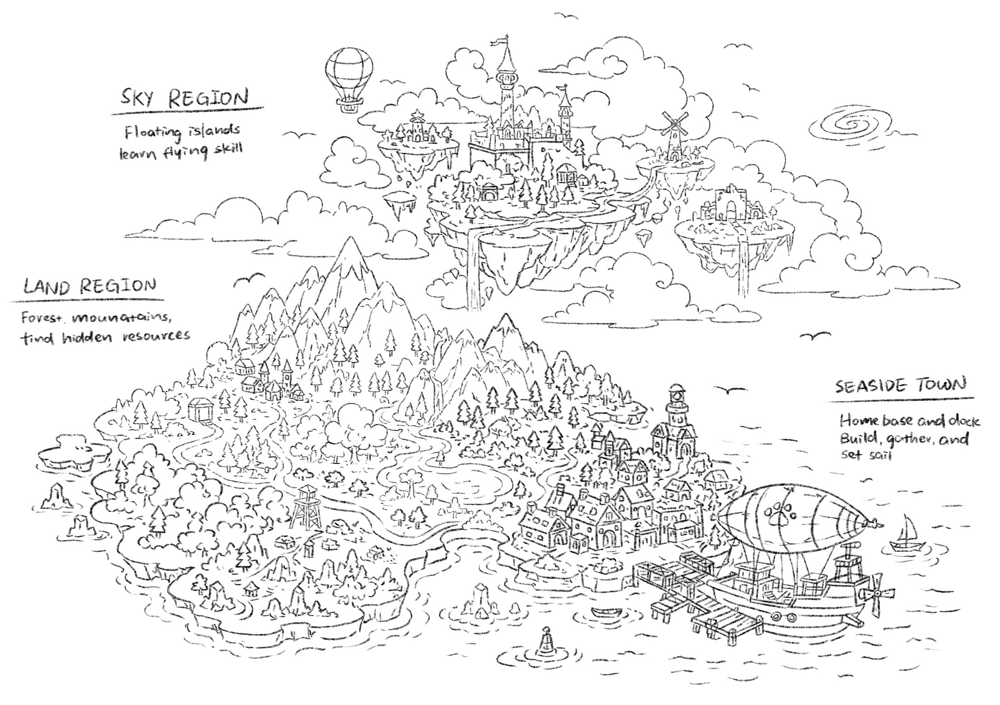
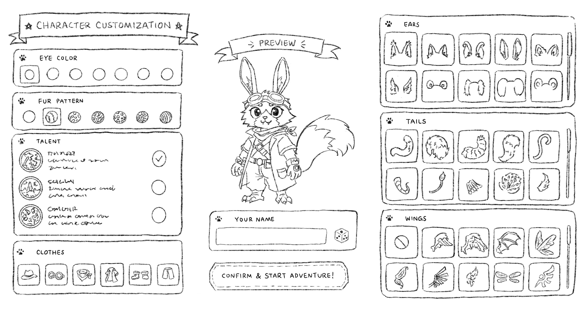

Cozy Survival Adventure — Fantasy • Cyberpunk • World Building
Galeforge is an original adventure game set in a world slowly disappearing beneath rising seas.
Players explore floating islands, gather resources, recruit animal companions, and gradually construct a massive flying vessel capable of carrying an entire community toward a new home.
The project blends cozy exploration with survival mechanics while imagining a hopeful future built through collaboration and creativity.
This project allowed me to explore world building from the ground up. I designed the visual identity of the game, including:
Rather than presenting a dystopian future, I wanted Galeforge to feel optimistic. Although the world is changing, the focus remains on cooperation, exploration, and rebuilding.
The cyberpunk influences appear through machinery, architecture, and transportation while natural environments remain warm and inviting.
The flying ship is the visual centerpiece of the project — a design that reflects the community's resourcefulness, built up piece by piece from salvaged and repurposed technology.


Each companion contributes a distinct role to the community aboard the airship — how they look reflects what they do.

The world map spans three connected territories, each supporting a different stage of the players' journey.

Resource gathering & exploration
Resource gathering & NPC encounters
Home base — where the airship is built
The game opens with a character creator, letting players build a companion entirely their own. Outfit, ears, fur, pattern, tail, eyes, color, mouth, wings, skills, and talents can all be mixed and matched freely — the results don't have to be realistic, just personal.
